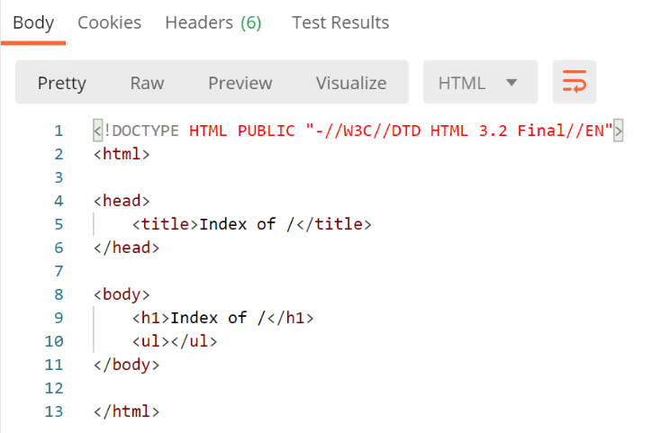
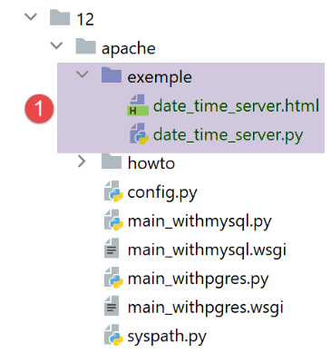
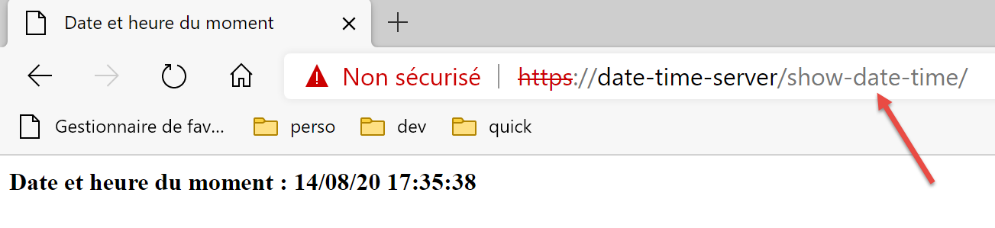
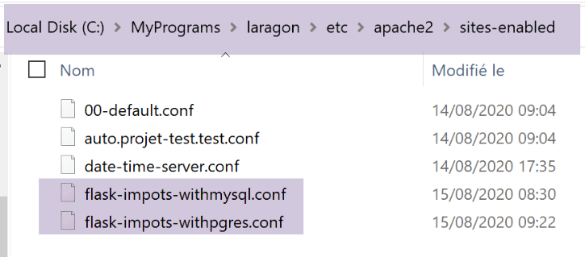

37. Esercizio pratico: versione 17

Questa nuova versione apporta le seguenti modifiche:
- sarà portata su un server Apache / Windows;
- per effettuare questo porting, la versione 17 contiene tutte le dipendenze necessarie nella cartella [impots / http-servers/ 12]. Si ricorda che le versioni precedenti recuperavano le dipendenze da diverse cartelle dell’intero progetto [python-flask-2020];
37.1. Riorganizzazione delle dipendenze dell'applicazione

Si ricorda che la gestione delle dipendenze dell'applicazione avviene nello script [syspath]. Nella versione precedente, lo script era il seguente:
def configure(config: dict) -> dict:
import os
# cartella di questo file
script_dir = os.path.dirname(os.path.abspath(__file__))
# percorso radice
root_dir = "C:/Data/st-2020/dev/python/cours-2020/python3-flask-2020"
# dipendenze
absolute_dependencies = [
# cartelle del progetto
# BaseEntity, MyException
f"{root_dir}/classes/02/entities",
# InterfaceImpôtsDao, InterfaceImpôtsMétier, InterfaceImpôtsUi
f"{root_dir}/impots/v04/interfaces",
# AbstractImpôtsdao, ImpôtsConsole, ImpôtsMétier
f"{root_dir}/impots/v04/services",
# ImpotsDaoWithAdminDataInDatabase
f"{root_dir}/impots/v05/services",
# AdminData, ImpôtsError, TaxPayer
f"{root_dir}/impots/v04/entities",
# Costanti, intervalli
f"{root_dir}/impots/v05/entities",
# Logger, SendAdminMail
f"{root_dir}/impots/http-servers/02/utilities",
# cartella dello script principale
script_dir,
# configurazioni [database, layers, parameters, controllers, views]
f"{script_dir}/../configs",
# controllori
f"{script_dir}/../controllers",
# risposte HTTP
f"{script_dir}/../responses",
# modelli delle viste
f"{script_dir}/../models_for_views",
]
# si imposta il syspath
from myutils import set_syspath
set_syspath(absolute_dependencies)
# si rende la configurazione
return {
"root_dir": root_dir,
"script_dir": script_dir
}
È necessario riposizionare tutte le dipendenze il cui nome assoluto dipende dalla variabile [root_dir] della riga 8, ovvero le righe da 13 a 26.
Lo script [syspath] della nuova versione sarà il seguente:
def configure(config: dict) -> dict:
import os
# cartella di questo file
script_dir = os.path.dirname(os.path.abspath(__file__))
# dipendenze
absolute_dependencies = [
# entità dell'applicazione
f"{script_dir}/../entities",
# livello [dao]
f"{script_dir}/../layers/dao",
# livello [métier]
f"{script_dir}/../layers/métier",
# utilità
f"{script_dir}/../utilities",
# cartella dello script principale
script_dir,
# configurazioni [database, layers, parameters, controllers, views]
f"{script_dir}/../configs",
# controllori
f"{script_dir}/../controllers",
# risposte HTTP
f"{script_dir}/../responses",
# modelli delle viste
f"{script_dir}/../models_for_views",
]
# si imposta il syspath
import sys
# si aggiungono le dipendenze assolute del progetto
for directory in absolute_dependencies:
# si verifica l'esistenza della cartella
existe = os.path.exists(directory) and os.path.isdir(directory)
if not existe:
# si avvisa lo sviluppatore
raise BaseException(f"[set_syspath] le dossier du Python Path [{directory}] n'existe pas")
else:
# si inserisce la cartella all'inizio del syspath
sys.path.insert(0, directory)
# si esegue la configurazione
return {
"script_dir": script_dir,
}
- righe 8-27: tutte le dipendenze sono ora relative alla variabile [script_dir] della riga 5;
- righe 42-45: la variabile [root_dir] è stata rimossa dalla configurazione del syspath;
- riga 10: le entità dell’applicazione si trovano nella cartella [entities] [1];
- riga 12: il livello [dao] si trova nella cartella [layers/dao] [2];
- riga 14: il livello [métier] si trova nella cartella [layers/métier] [2];
- riga 16: le utilità [Logger, SendMail] si trovano nella cartella [utilities] [3];
- righe 29-40: si calcola il Python Path dell’applicazione senza importare il modulo [myutils];

37.2. Test
A questo punto, la versione 17 dovrebbe funzionare. Verificatelo.
37.3. Porting di un’applicazione Python / Flask su un server Apache / Windows
37.3.1. Fonti
Per effettuare il porting di un'applicazione Flask su Apache / Windows, ho dovuto cercare su Internet. Ecco il link che mi ha aiutato a iniziare: [https://medium.com/@madumalt/flask-app-deployment-in-windows-apache-server-mod-wsgi-82e1cfeeb2ed];
Ho utilizzato le informazioni contenute in questo link, tranne che per la configurazione del server Apache. Per quest’ultima ho utilizzato un esempio di configurazione del server Apache fornito da Laragon.
37.3.2. Installazione del modulo Python mod_wsgi
L’applicazione Python/Flask che abbiamo sviluppato utilizzava il server WSGI (Web Server Gateway Interface) [werkzeug] fornito con Flask. Questo server è descritto |qui|. Il link [https://www.fullstackpython.com/wsgi-servers.html] descrive il funzionamento dei server WSGI. Esistono diversi |server WSGI|. Uno di questi è il server Apache che funziona in modalità WSGI. È la soluzione adottata in questo caso perché Laragon, che abbiamo installato, include un server Apache.
Affinché il server Apache possa ospitare un’applicazione Python, è necessario installare il modulo Python [mod_wsgi]. L’installazione di questo modulo è complessa perché durante il processo viene eseguita una compilazione C++. Per completare con successo l’installazione, è necessario un compilatore Microsoft C++. Una soluzione semplice consiste nell’installare la versione attuale di Visual Studio Community [https://visualstudio.microsoft.com/fr/vs/community/].
Se non si ha bisogno di Visual Studio per scopi diversi da [mod_wsgi], è possibile limitare l’installazione all’ambiente C++:

Una volta installato il compilatore C++, l’installazione del modulo [mod_wsgi] avviene in un terminale PyCharm:
(venv) C:\Data\st-2020\dev\python\cours-2020\python3-flask-2020\impots\http-servers\11>SET MOD_WSGI_APACHE_ROOTDIR=C:\MyPrograms\laragon\bin\apache\httpd-2.4.35-win64-VC15
(venv) C:\Data\st-2020\dev\python\cours-2020\python3-flask-2020\impots\http-servers\11>pip install mod_wsgi
Collecting mod_wsgi
Using cached mod_wsgi-4.7.1.tar.gz (498 kB)
Using legacy setup.py install for mod-wsgi, since package 'wheel' is not installed.
Installing collected packages: mod-wsgi
Running setup.py install for mod-wsgi ... done
Successfully installed mod-wsgi-4.7.1
- riga 1: si imposta il valore della variabile d’ambiente [MOD_WSGI_APACHE_ROOTDIR]. Questo valore corrisponde al percorso del server Apache nel file system. In questo caso il percorso è [<laragon>\bin\apache\httpd-2.4.35-win64-VC15], dove <laragon> è la cartella di installazione di Laragon. È possibile ottenere questo percorso in vari modi. Eccone uno ricavato da una delle opzioni di Laragon:

In [1-3], il file [httpd.conf] è il file di configurazione principale del server Apache. Il file in questione viene quindi aperto in un editor di testo (Notepad++ nell’esempio seguente):

In [2], la cartella di installazione di Apache è quella che precede la stringa [conf\httpd.conf].
Torniamo all'installazione del modulo [mod_wsgi]:
- righe 3-9: installazione del modulo [mod_wsgi];
37.3.3. Configurazione del server Apache di Laragon
Configureremo il server Apache di Laragon. Iniziamo dal suo file di configurazione principale [httpd.conf]:
Ci posizioniamo alla fine del file [httpd.conf]:
…
IncludeOptional "C:/MyPrograms/laragon/etc/apache2/alias/*.conf"
IncludeOptional "C:/MyPrograms/laragon/etc/apache2/sites-enabled/*.conf"
Include "C:/MyPrograms/laragon/etc/apache2/httpd-ssl.conf"
Include "C:/MyPrograms/laragon/etc/apache2/mod_php.conf"
# Python mod_wsgi
LoadModule wsgi_module "c:/data/st-2020/dev/python/cours-2020/python3-flask-2020/venv/lib/site-packages/mod_wsgi/server/mod_wsgi.cp38-win_amd64.pyd"
- La riga 8 è stata aggiunta al file esistente [httpd.conf] alla fine del file. Indica al server Apache dove si trova un elemento del modulo [mod_wsgi] che abbiamo appena installato;
Un modo semplice per ottenere il percorso della riga 8 è eseguire il seguente comando in un terminale PyCharm:
(venv) C:\Data\st-2020\dev\python\cours-2020\python3-flask-2020\impots\http-servers\11>mod_wsgi-express module-config
LoadModule wsgi_module "c:/data/st-2020/dev/python/cours-2020/python3-flask-2020/venv/lib/site-packages/mod_wsgi/server/mod_wsgi.cp38-win_amd64.pyd"
WSGIPythonHome "c:/data/st-2020/dev/python/cours-2020/python3-flask-2020/venv"
Alcune documentazioni indicano che è necessario aggiungere le righe 2 e 3 alla fine del file [httpd.conf]. Nel mio caso, la riga 3 sopra riportata causava un errore (modulo [encodings] mancante). Pertanto non è stata inserita nel file [httpd.conf]. È stata inserita solo la riga 2. Il significato dei diversi parametri del modulo [mod_wsgi] utilizzabili nei file di configurazione di Apache è descritto |qui|.
Successivamente, attiveremo il protocollo HTTPS del server Apache:

- in [1-4], si attiva il protocollo HTTPS del server Apache;
Ora potremo utilizzare URL e [https://serveur/chemin];
Per configurare Apache in modo che serva un'applicazione Flask, il link indicato |sopra| utilizza server virtuali. Anche Laragon offre la possibilità di gestire server virtuali:

- in [1-3], si chiede a Laragon di creare automaticamente degli host virtuali;
Il passo successivo consiste nel creare un progetto web con Laragon:
 |
 |  |
- in [1-3], si crea un progetto vuoto PHP;
- in [4-8], Laragon ha creato un sito virtuale denominato [auto.projet-test.test], configurato dal file [auto.projet-test.test.conf] [8] nella cartella [sites-enabled] [7]. Questa cartella si trova all’indirizzo [<laragon>\etc\apache2\sites-enabled], dove [laragon] è la cartella di installazione di Laragon;
Sebbene non rientri in ciò che stiamo facendo al momento, potreste essere curiosi di dare un’occhiata a questo sito web [projet-test] che abbiamo appena creato:

- in [1-5] è stato creato un progetto vuoto. Si tratta di un progetto PHP situato nella cartella [<laragon>/www], dove [laragon] è la cartella di installazione di Laragon;
Ora esaminiamo il file [auto.projet-test.test.conf] generato da Laragon nella cartella [<laragon>\etc\apache2\sites-enabled]:
define ROOT "C:/MyPrograms/laragon/www/projet-test/"
define SITE "projet-test.test"
<VirtualHost *:80>
DocumentRoot "${ROOT}"
ServerName ${SITE}
ServerAlias *.${SITE}
<Directory "${ROOT}">
AllowOverride All
Require all granted
</Directory>
</VirtualHost>
<VirtualHost *:443>
DocumentRoot "${ROOT}"
ServerName ${SITE}
ServerAlias *.${SITE}
<Directory "${ROOT}">
AllowOverride All
Require all granted
</Directory>
SSLEngine on
SSLCertificateFile C:/MyPrograms/laragon/etc/ssl/laragon.crt
SSLCertificateKeyFile C:/MyPrograms/laragon/etc/ssl/laragon.key
</VirtualHost>
- riga 1: la radice, nel file system, del progetto creato;
- riga 2: il nome del server virtuale. I file URL relativi a questo server avranno il formato [http(s)://projet-test.test/chemin];
- righe 4-12: configurazione del sito virtuale per la porta 80 (riga 4) e il protocollo HTTP;
- righe 14-27: configurazione del sito virtuale per la porta 443 (riga 14) e il protocollo HTTPS;
Vediamo come funziona un server virtuale. Per prima cosa avviamo il server Apache e PHP:
Con un browser richiediamo quindi l’URL [http://projet-test.test/]:

- in [1], la pagina URL richiesta;
- in [2] è stato utilizzato il protocollo HTTP;
- nel [3], poiché il progetto [projet-test] è vuoto, si ottiene l’indice della sua cartella (elenco del suo contenuto), indice vuoto;
Ora richiediamo il file protetto URL da [https://projet-test.test/]:

- in [1-2], si ottiene la stessa risposta di prima ma con il protocollo HTTPS [1];
La creazione del server virtuale [projet-test.test] ha generato una nuova voce nel file [<windows>/system32/drivers/etc/hosts]:

- riga 23: l’indirizzo IP del nome [projet-test.test] è 127.0.0.1, ovvero l’indirizzo di [localhost] (riga 20), il computer locale. Pertanto, quando in un browser si digita URL [http://projet-test.test/chemin], la richiesta viene inviata all’indirizzo 127.0.0.1 sulla porta 80. A rispondere è quindi il server Apache del computer locale (localhost).
Ci si potrebbe chiedere perché, quando si digita la richiesta [http://projet-test.test/], il server Apache utilizzi la configurazione del file [<laragon>\etc\apache2\sites-enabled\auto.projet-test.test.conf]:

Per capirlo, occorre vedere cosa invia il browser al server Apache quando si effettua questa richiesta. Proviamo a farlo con Postman:

- in [1-3], si invia una richiesta HTTPS [1];
- con [4], Postman segnala di non aver riconosciuto il certificato di sicurezza. Il protocollo HTTPS stabilisce una connessione crittografata tra il client web (in questo caso Postman) e il server Apache. Questa connessione crittografata avviene tramite certificati scambiati tra il client e il server. È il server che avvia la procedura di stabilimento della connessione crittografata inviando al client un certificato di sicurezza. Affinché questo certificato venga accettato dal client, deve essere firmato, ovvero acquistato da aziende autorizzate a rilasciare certificati di sicurezza. Quando abbiamo attivato il protocollo HTTPS di Laragon, Laragon ha creato autonomamente il certificato di sicurezza. In questo caso si dice che il certificato è autofirmato. La maggior parte dei client web emette un avviso quando riceve un certificato autofirmato. È ciò che fa Postman in [4]. La maggior parte dei client web propone quindi di disattivare la verifica del certificato di sicurezza inviato dal server. È ciò che propone Postman in [5];
Clicchiamo sul link [5] per disattivare la verifica SSL (Secure Sockets Layer). SSL / TSL (Transport Layer Security) è un protocollo di sicurezza che crea un canale di comunicazione protetto tra due computer su Internet. È il protocollo utilizzato in questo caso da Apache. La risposta è la seguente:

Riceviamo la stessa pagina che otterremmo con un browser tradizionale. Ora osserviamo il dialogo client/server nella console di Postman (Ctrl-Alt-C):
- riga 6: l’intestazione HTTP [Host] specifica il nome del server a cui si rivolge il client web. È il principio alla base dei server virtuali. Allo stesso indirizzo IP (in questo caso 127.0.0.1), un server web può ospitare più siti web con nomi diversi. L'intestazione HTTP [Host] consente al client di specificare a quale server (in questo caso all'indirizzo 127.0.0.1) si sta rivolgendo;
Cosa fa ora Apache?
All’avvio, Apache legge tutti i file di configurazione presenti nella cartella [[<laragon>\etc\apache2\sites-enabled]:
Ogni file di configurazione definisce un server virtuale. Ad esempio, nel file [auto.projet-test.test.conf] si trova la seguente riga:
define ROOT "C:/MyPrograms/laragon/www/projet-test/"
define SITE "projet-test.test"
…
La riga 2 definisce il server virtuale [projet-test.test]. Il file [auto.projet-test.test.conf] contiene la configurazione di questo server virtuale. Poiché all’avvio legge tutti i file di configurazione presenti nella cartella [<laragon>\etc\apache2\sites-enabled], il server Apache sa che esiste un server virtuale denominato [projet-test.test]. Pertanto, quando riceve dal client Postman la richiesta HTTPS:
riconosce che la richiesta è indirizzata al server virtuale [projet-test.test] (riga 6) e che quest’ultimo esiste. Utilizza quindi la configurazione del server virtuale [projet-test.test] per rispondere al client Postman.
37.4. Creazione di un primo server virtuale Apache
Ora che sappiamo a cosa servono i server virtuali e come definirli, ne creeremo uno. Servirà per eseguire un’applicazione Python Flask installata nella cartella [Apache] della versione 17 attualmente in fase di distribuzione sul server Apache:
Abbiamo inserito nella cartella [http-servers/12/apache/exemple] l'applicazione sviluppata nel paragrafo |link|, un servizio web per data e ora:

Il server [date_time_server.py] è il seguente:
# importazioni
import os
import sys
import time
# dobbiamo inserire la cartella dei moduli nel Python Path
# per il porting su Apache Windows
sys.path.insert(0, "C:/Data/st-2020/dev/python/cours-2020/python3-flask-2020/venv/lib/site-packages")
from flask import Flask, make_response, render_template
# applicazione Flask
script_dir = os.path.dirname(os.path.abspath(__file__))
application = Flask(__name__, template_folder=f"{script_dir}")
# Home URL
@application.route('/')
def index():
# invio dell'ora al client
# time.localtime: numero di millisecondi dal 01/01/1970
# time.strftime consente di formattare l'ora e la data
# formato di visualizzazione data-ora
# d: giorno a 2 cifre
# m: mese a 2 cifre
# y: anno a 2 cifre
# H: ora 0,23
# M: minuti
# S: secondi
# data/ora del momento
time_of_day = time.strftime('%d/%m/%y %H:%M:%S', time.localtime())
# si genera il documento da inviare al cliente
page = {"date_heure": time_of_day}
document = render_template("date_time_server.html", page=page)
print("document", type(document), document)
# risposta HTTP al cliente
response = make_response(document)
print("response", type(response), response)
return response
# solo main
if __name__ == '__main__':
application.config.update(ENV="development", DEBUG=True)
application.run()
L'applicazione Flask è identificata dall'ID [application] (righe 14, 43, 44). Questo nome è obbligatorio. Se si fa riferimento all’applicazione Flask con un altro identificativo, l’applicazione non funzionerà e verrà visualizzato un messaggio di errore che indica che non riesce a trovare l’URL richiesto. Questo messaggio di errore non fornisce alcuna indicazione sulla causa dell’errore. È quindi necessario prestare attenzione a questo aspetto.
Il file HTML a cui si fa riferimento alla riga 34 è il seguente:
<!DOCTYPE html>
<html lang="fr">
<head>
<meta charset="UTF-8">
<title>Date et heure du moment</title>
</head>
<body>
<b>Date et heure du moment : {{page.date_heure}}</b>
</body>
</html>
- [date-time-server] sarà il server virtuale che ospiterà questa applicazione. Sarà configurato dal file [<laragon>\etc\apache2\sites-enabled\date-time-server.conf] (si ricorda che questo nome è libero – Apache legge tutti i file presenti in [sites-enabled] per individuare i siti virtuali ospitati);
Otteniamo questo file innanzitutto copiando il file [auto.projet-test.test.conf], quindi lo modifichiamo.

Il file [date-time-server.conf] sarà il seguente:
# cartella dello script Python-Flask dell'applicazione
define ROOT "C:/Data/st-2020/dev/python/cours-2020/python3-flask-2020/impots/http-servers/12/apache/exemple"
# nome del sito web configurato da questo file
# qui si chiamerà date-time-server
# i URL saranno del tipo http(s)://date-time-server/percorso
define SITE "date-time-server"
# inserire l'indirizzo IP 127.0.0.1 per il sito SITE nel file c:/windows/system32/drivers/etc/hosts
# URL HTTP
<VirtualHost *:80>
# con l'alias / i URL avranno il formato http(s)://date-time-server/percorso/...
WSGIScriptAlias / "${ROOT}/date_time_server.py"
DocumentRoot "${ROOT}"
ServerName ${SITE}
ServerAlias *.${SITE}
<Directory "${ROOT}">
AllowOverride All
Require all granted
</Directory>
</VirtualHost>
# URL protetti con HTTPS
<VirtualHost *:443>
# con l'alias / i URL avranno il formato http(s)://date-time-server/percorso/...
WSGIScriptAlias / "${ROOT}/date_time_server.py"
DocumentRoot "${ROOT}"
ServerName ${SITE}
ServerAlias *.${SITE}
<Directory "${ROOT}">
AllowOverride All
Require all granted
</Directory>
SSLEngine on
SSLCertificateFile C:/MyPrograms/laragon/etc/ssl/laragon.crt
SSLCertificateKeyFile C:/myprograms/laragon/etc/ssl/laragon.key
</VirtualHost>
- riga 7: si assegna un nome al server virtuale configurato dal file;
- riga 2: si assegna il valore alla variabile [ROOT] utilizzata alle righe 14 e 27;
- righe 14 e 27: si indica il percorso dello script Python che deve essere eseguito quando il server virtuale riceve una richiesta. Qui si specifica che le richieste per il server [date-time-server] vengono gestite dallo script Python [date_time_server.py]. Questa differenza rispetto al file [auto.projet-test.test.conf] deriva dal fatto che quel file configurava un server PHP, mentre il file [date-time-server.conf] configura un server Python;
- righe 14 e 27: l’attributo [WSGIScriptAlias /] indica in questo caso che la radice del server [date-time-server] sarà [/]. Pertanto, i URL dell’applicazione assumeranno la forma [http(s)://date-time-server/chemin];
- nelle righe 14 e 27 è possibile assegnare un’altra radice all’applicazione, ad esempio [WSGIScriptAlias /show]. In tal caso, i URL dell’applicazione assumeranno la forma [http(s)://show/date-time-server/chemin];
Dobbiamo inoltre aggiungere una riga al file [<windows>/system32/drivers/etc/hosts]:
Aggiungiamo la riga 25, per assegnare l’indirizzo IP [127.0.0.1] al server virtuale [date-time-server].
Verifichiamo il tutto. Avviamo il server Apache:

Quindi richiediamo l'indirizzo URL [https://date-time-server] con un browser:

- in [1], la pagina URL richiesta;
- in [3], la risposta del server;
- in [2], il browser segnala che la connessione HTTPS non è sicura poiché ha rilevato che il certificato inviato dal server Apache era autofirmato;
Ora, nel file [date-time-server.conf], inseriamo un alias alle righe 14 e 27:
WSGIScriptAlias /show-date-time "${ROOT}/date_time_server.py"
La modifica non viene applicata immediatamente dal server Apache. È necessario ricaricare il server:

Si richiede quindi URL [https://date-time-server/show-date-time]. La risposta del server è quindi la seguente:

37.5. Porting dell’applicazione per il calcolo delle imposte su Apache / Windows
La cartella [apache] [2] viene inizialmente ottenuta copiando la cartella [main]. È importante che si trovino allo stesso livello affinché i percorsi dello script [syspath.py], copiato da [1] a [2], rimangano validi. Per non interferire con il corretto funzionamento dell’applicazione [impots / http-servers/ 12], inseriamo in [apache] la configurazione che verrà eseguita dal server Apache;

- il file [config] di [2] è identico a [config] di [1];
- il file [syspath] di [2] è lo stesso di [syspath] di [1];
- il file [main_withmysql] derivato da [2] è il file [main] derivato da [1] con le seguenti modifiche:
Lo script principale [main] riceveva un parametro [mysql / pgres] che gli indicava quale SGBD utilizzare. Lo script [main_withmysql] utilizza SGBD e MySQL:
# si attende un parametro mysql o pgres
import os
import sys
# si configura l'applicazione con MySQL
import config
config = config.configure({'sgbd': "mysql"})
# dipendenze
from SendAdminMail import SendAdminMail
from Logger import Logger
from ImpôtsError import ImpôtsError
…
Alla riga 7, si imposta il SGBD su MySQL.
- il file [main_withpgres] derivato da [2] è il file [main] derivato da [1] con le seguenti modifiche: utilizza il file SGBD PostgreSQL:
# si attende un parametro mysql o pgres
import os
import sys
# si configura l'applicazione con MySQL
import config
config = config.configure({'sgbd': "pgres"})
# dipendenze
from SendAdminMail import SendAdminMail
from Logger import Logger
from ImpôtsError import ImpôtsError
…
Alla riga 7, si imposta SGBD su PostgreSQL.
Fatto ciò, si crea lo script [main_withmysql.wsgi] (il suffisso utilizzato non ha importanza) come segue:
Lo script [main_withmysql.wsgi] sarà il target eseguito dal server Apache in modalità WSGI:
- il target del server Apache avrebbe potuto essere lo script [main_withmysql.py], come è stato fatto in precedenza con lo script [date_time_server.py]. Tuttavia, sarebbe stato necessario modificarlo leggermente:
- a differenza della modalità di esecuzione con uno script da console, con Apache la cartella contenente il target [main_withmysql.py] non fa parte del Python Path. Pertanto, la riga 6 dello script [main_withmysql.py] genera un errore;
- la seconda modifica che sarebbe stato necessario apportare è che in [main_withmysql] l’applicazione Flask è referenziata dall’identificatore [app]. È noto che per Apache / WSGI essa deve essere referenziata anche dall’identificatore [application];
- anziché modificare [main_withmysql.py], si cambia la destinazione di Apache. D'ora in poi sarà lo script [main_withmysql.wsgi] sopra riportato:
- righe 1-7: si aggiunge la cartella dello script al Python Path. Di conseguenza, la riga 6 di [main_withmysql.py] non genera più un errore;
- righe 9-10: l’importazione di [main_withmysql.py] ne provoca l’esecuzione. Inoltre, si fa riferimento all’applicazione Flask [app] presente in [main_withmysql.py] con l’identificatore [application] richiesto da Apache in modalità WSGI;
Si procede allo stesso modo con lo script [main_withpgres.wsgi]:
# cartella di questo file
import os
script_dir = os.path.dirname(os.path.abspath(__file__))
# la si aggiunge al syspath affinché l'importazione successiva sia possibile
import sys
sys.path.insert(0, script_dir)
# si importa l'applicazione Flask [app] assegnandogli il nome [application]
from main_withpgres import app as application
Ora disponiamo dei file eseguibili per il server Apache. Dobbiamo ora creare due server virtuali, uno per ciascun file.
In [<laragon>\etc\apache2\sites-enabled], creiamo il file [flask-impots-withmysql.conf] (il nome assegnato non ha importanza):

# cartella dello script .wsgi
define ROOT "C:/Data/st-2020/dev/python/cours-2020/python3-flask-2020/impots/http-servers/12/apache"
# nome del sito web configurato da questo file
# qui si chiamerà flask-impots-withmysql
# i URL saranno del tipo http(s)://flask-impots-withmysql/percorso
define SITE "flask-impots-withmysql"
# inserire l'indirizzo IP 127.0.0.1 per il sito SITE nel file c:/windows/system32/drivers/etc/hosts
# inserire qui i percorsi delle librerie Python da utilizzare - separarle con virgole
# qui le librerie di un ambiente Python virtuale
WSGIPythonPath "C:/Data/st-2020/dev/python/cours-2020/python3-flask-2020/venv/lib/site-packages"
# Python Home - necessario solo se sono installate più versioni di Python
# WSGIPythonHome "C:/Program Files/Python38"
# URL HTTP
<VirtualHost *:80>
# con l'alias / i URL avranno la forma /{prefixe_url}/action/...
# con l'alias /impots, i URL avranno la forma /impots/{prefixe_url}/action/...
# dove [prefixe_url] è definito in parameters.py
WSGIScriptAlias / "${ROOT}/main_withmysql.wsgi"
DocumentRoot "${ROOT}"
ServerName ${SITE}
ServerAlias *.${SITE}
<Directory "${ROOT}">
AllowOverride All
Require all granted
</Directory>
</VirtualHost>
# URL protette con HTTPS
<VirtualHost *:443>
# con l'alias /, i URL avranno la forma /{prefixe_url}/action/...
# con l'alias /impots, i URL avranno la forma /impots/{prefixe_url}/action/...
# dove [prefixe_url] è definito in parameters.py
WSGIScriptAlias / "${ROOT}/main_withmysql.wsgi"
DocumentRoot "${ROOT}"
ServerName ${SITE}
ServerAlias *.${SITE}
<Directory "${ROOT}">
AllowOverride All
Require all granted
</Directory>
SSLEngine on
SSLCertificateFile C:/MyPrograms/laragon/etc/ssl/laragon.crt
SSLCertificateKeyFile C:/myprograms/laragon/etc/ssl/laragon.key
</VirtualHost>
- riga 2: la radice dell’applicazione, la cartella [apache] che abbiamo creato;
- righe 23, 38: la destinazione [main_witmysql.wsgi] che abbiamo creato:
- riga 7: il server virtuale si chiamerà [flask-impots-withmysql];
- riga 13: la direttiva [WSGIPythonPath] consente di aggiungere cartelle al Python Path. In questo caso, Apache non è a conoscenza del fatto che abbiamo utilizzato un ambiente virtuale per sviluppare l’applicazione e che tutti i moduli utilizzati dall’applicazione si trovano in tale ambiente virtuale. Pertanto, alla riga 13, aggiungiamo la cartella che contiene tutti i moduli dell’ambiente virtuale utilizzato. Una possibilità è quella di copiare questa cartella in un’altra posizione del file system e fare riferimento a tale posizione. Un’altra possibilità è quella di aggiungere questa cartella al Python Path direttamente nel target [main_witmysql.wsgi] (probabilmente questa è la soluzione migliore);
- riga 16: è possibile indicare ad Apache la cartella di installazione di Python nel file system. Normalmente, questa si trova nel PATH del computer e spesso questa riga è superflua (come in questo caso). Tuttavia, potrebbero esserci diverse installazioni di Python sul computer e quella desiderata potrebbe non trovarsi nel PATH del computer. In tal caso, questa riga risolve il problema;
Allo stesso modo, si crea un file [flask-impots-withpgres.conf]:
# cartella dello script .wsgi
define ROOT "C:/Data/st-2020/dev/python/cours-2020/python3-flask-2020/impots/http-servers/12/apache"
# nome del sito web configurato da questo file
# qui si chiamerà flask-impots-withmysql
# i URL saranno del tipo http(s)://flask-impots-withmysql/percorso
define SITE "flask-impots-withpgres"
# inserire l'indirizzo IP 127.0.0.1 per il sito SITE nel file c:/windows/system32/drivers/etc/hosts
# inserire qui i percorsi delle librerie Python da utilizzare - separarle con virgole
# qui le librerie di un ambiente Python virtuale
WSGIPythonPath "C:/Data/st-2020/dev/python/cours-2020/python3-flask-2020/venv/lib/site-packages"
# Python Home - necessario solo se sono installate più versioni di Python
# WSGIPythonHome "C:/Program Files/Python38"
# URL HTTP
<VirtualHost *:80>
# con l'alias / i URL avranno la forma /{prefixe_url}/action/...
# con l'alias /impots, i URL avranno la forma /impots/{prefixe_url}/action/...
# dove [prefixe_url] è definito in parameters.py
WSGIScriptAlias / "${ROOT}/main_withpgres.wsgi"
DocumentRoot "${ROOT}"
ServerName ${SITE}
ServerAlias *.${SITE}
<Directory "${ROOT}">
AllowOverride All
Require all granted
</Directory>
</VirtualHost>
# URL protette con HTTPS
<VirtualHost *:443>
# con l'alias /, i URL avranno la forma /{prefixe_url}/action/...
# con l'alias /impots, i URL avranno la forma /impots/{prefixe_url}/action/...
# dove [prefixe_url] è definito in parameters.py
WSGIScriptAlias / "${ROOT}/main_withpgres.wsgi"
DocumentRoot "${ROOT}"
ServerName ${SITE}
ServerAlias *.${SITE}
<Directory "${ROOT}">
AllowOverride All
Require all granted
</Directory>
SSLEngine on
SSLCertificateFile C:/MyPrograms/laragon/etc/ssl/laragon.crt
SSLCertificateKeyFile C:/myprograms/laragon/etc/ssl/laragon.key
</VirtualHost>
Salviamo tutti questi file, avviamo il server Apache e i file SGBD, MySQL e PostgreSQL. L’applicazione è configurata con il prefisso di URL, [/do] e [with_csrftoken=False] (nessun token CSRF) in [configs/parameters.py]. Richiediamo URL e [https://flask-impots-withmysql/do]. La risposta del server è la seguente:

Ora richiediamo URL e [https://flask-impots-pgres/do]. La risposta è la seguente:

Entrambe le applicazioni funzionano normalmente.
Ora modifichiamo il parametro [WSGIScriptAlias] in [flask-impots-withmysql.conf]:
# cartella dello script .wsgi
define ROOT "C:/Data/st-2020/dev/python/cours-2020/python3-flask-2020/impots/http-servers/12/apache"
…
# URL HTTP
<VirtualHost *:80>
# con l'alias /, i URL assumeranno la forma /{prefixe_url}/action/...
# con l'alias /impots, i URL avranno la forma /impots/{prefixe_url}/action/...
# dove [prefixe_url] è definito in parameters.py
WSGIScriptAlias /impots "${ROOT}/main_withmysql.wsgi"
…
</VirtualHost>
# URL protette con HTTPS
<VirtualHost *:443>
# con l'alias /, mentre i URL avranno la forma /{prefixe_url}/action/...
# con l'alias /impots, i URL avranno la forma /impots/{prefixe_url}/action/...
# dove [prefixe_url] è definito in parameters.py
WSGIScriptAlias /impots "${ROOT}/main_withmysql.wsgi"
…
</VirtualHost>
- alle righe 11 e 20, l’alias WSI è ora [/impots];
Arrestiamo e riavviamo il server Apache, quindi richiediamo URL [https://flask-impots-withmysql/impots/do]. La risposta del server è la seguente:

Si è verificato un errore. L’URL [1] ne indica la causa. Avrebbe dovuto essere [https://flask-impots-withmysql/impots/do/afficher-vue-authentification]. Manca l’alias WSGI. Si tratta di un errore della nostra applicazione. Essa è in grado di gestire un prefisso URL (/do è effettivamente presente). Si potrebbe pensare che aggiungendo il prefisso [/impots/do] alla nostra applicazione si risolverebbe il problema precedente. Ma non è così. Si incontrano allora altri tipi di problemi. L’alias WSGI non si comporta come un prefisso di URL.
Proviamo a capire cosa è successo. Abbiamo richiesto URL [https://flask-impots-withmysql/impots/do]. Ci aspettavamo di visualizzare la pagina di autenticazione. In [1], come si vede sopra, l’applicazione ne ha richiesto la visualizzazione, ma non con il codice corretto URL. Esaminiamo il percorso della richiesta [https://flask-impots-withmysql/impots/do].
Innanzitutto è stato eseguito il seguente percorso (configs/routes.py):
# i percorsi dell'applicazione Flask
# radice dell'applicazione
app.add_url_rule(f'{prefix_url}/', methods=['GET'],
view_func=routes.index)
La route della riga 3 nel nostro esempio è [https://flask-impots-withmysql/impots/do]. Si nota che dalla route è stata eliminata la parte [https://flask-impots-withmysql/impots], che è diventata semplicemente [/do]. Per la parte [https://flask-impots-withmysql] è normale che il nome del server non sia riportato nella route. Ma si nota che non include nemmeno l’alias WSGI [/impots]. Questo è un punto importante. Anche con un alias WSGI, le nostre rotte iniziali rimangono valide.
Ora vediamo cosa fa la funzione [index] della riga 4 (configs/routes_without_csrftoken):
# radice dell'applicazione
def index() -> tuple:
# reindirizzamento a /init-session/html
return redirect(url_for("init_session", type_response="html"), status.HTTP_302_FOUND)
Riga 4: si viene reindirizzati alla funzione URL dalla funzione [init_session]. In [configs/routes.py], questa funzione è stata associata al percorso [/do/init-session/html]:
# init-session
app.add_url_rule(f'{prefix_url}/init-session/<string:type_response>{csrftoken_param}', methods=['GET'],
view_func=routes.init_session)
Riga 2: nel nostro test, [csrftoken_param] è la stringa vuota. L'applicazione non gestisce qui il token CSRF.
La funzione [init_session] è definita come segue (configs/routes_without_csrftoken):
# init-session
def init_session(type_response: str) -> tuple:
# si esegue il controller associato all'azione
return front_controller()
Alla riga 4, inizia la catena di elaborazione dell’azione [init-session]. Questa catena termina come segue in [responses/HtmlResponse]:
…
# ora occorre generare l'URL di reindirizzamento URL senza dimenticare il token CSRF se richiesto
if config['parameters']['with_csrftoken']:
csrf_token = f"/{generate_csrf()}"
else:
csrf_token = ""
# risposta di reindirizzamento
return redirect(f"{config['parameters']['prefix_url']}{ads['to']}{csrf_token}"), status.HTTP_302_FOUND
L'azione [init-session] è un'azione ADS (azione "Do Something") che termina con un reindirizzamento a una vista, riga 9. È qui che risiede il problema. La funzione [redirect] alla riga 9 non aggiunge automaticamente l’alias WSGI all’oggetto di reindirizzamento URL. È quanto mostra la schermata qui sopra. Manca l’alias /impots nell’oggetto di reindirizzamento URL.
La versione seguente risolve il problema dell’alias WSGI.